Introduction
Optivan is a visual optimization platform for computer-aided engineering (CAE). You build an engineering study as a node graph — design variables flow into evaluators (Python, shell, Matlab, or a CAE solver such as LS-DYNA), and the results feed objectives and constraints. Optivan then drives an optimizer, design-of-experiments (DOE), or robustness study over that graph and gives you the results as interactive charts.
If you have used a node-based tool — a shader graph, a compositing graph, or an MDO package such as HEEDS or modeFRONTIER — the model will feel familiar: boxes are operations, wires carry data, and the whole graph is evaluated once per design point.
What you can do with Optivan
- Optimize a design against one or more objectives, subject to constraints.
- Explore a design space with a DOE (Latin Hypercube, Sobol, full factorial, …).
- Quantify uncertainty with Monte Carlo and robust / reliability-based optimization.
- Wrap any solver — call Python or shell, template an input deck with the File Mapper,
and read results back from
binout,d3plot, CSV, or regex. - Scale out — run evaluations locally or on SSH / SLURM / LSF compute targets.
- Understand results — parallel-coordinates plots, scatter matrices, correlation heatmaps, response surfaces, and decision-tree variable importance.
How this manual is organized
The chapters build on each other. If you are new, read Getting Started and Core Concepts first, then Building a Workflow — together they take you from a blank canvas to a running optimization. Later chapters go deep on evaluators, LS-DYNA, run configuration, compute targets, and results.
Every operation is shown step by step with a screenshot, so you can follow along in the app.
Getting help inside the app
You don’t have to leave Optivan to find an answer. Click Ask Optivan in the top bar to open the in-app assistant. It is trained on this manual and can also — if you opt in — look at your current project graph and last run to give specific, grounded help (for example, “why isn’t my optimization converging?”). It only reads your project to advise you; it never changes it. See Troubleshooting & FAQ for more.
Getting Started
This chapter installs Optivan, signs you in, and gives you a tour of the workspace so the rest of the manual has names to point at.
Installing Optivan
- Go to obt.tools and enter your email to get the download for your platform
(macOS
.dmg, Windows.msi, or Linux.deb). - Install it the way you install any app on your platform, then launch Optivan.
 The obt.tools download gate — enter your email and pick your platform.
The obt.tools download gate — enter your email and pick your platform.
Signing in
Optivan requires a free account (it keeps your license and the in-app assistant tied to you). On first launch you’ll see the sign-in screen.
- Returning users: enter your email and password and click Sign in.
- New users: enter your email, type the code we email you, then set a password.
 First-launch sign-in. New users receive a one-time code by email, then set a password.
First-launch sign-in. New users receive a one-time code by email, then set a password.
Once you’re signed in, your session is remembered — you won’t be asked again on the next launch.
A tour of the workspace
When the app opens you’re looking at the workflow editor. The screenshot below labels the regions you’ll use throughout this manual.
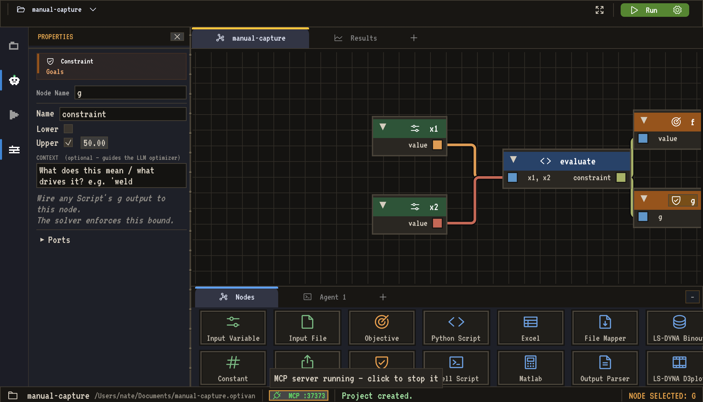
The workspace: (1) top bar, (2) activity bar, (3) left sidebar, (4) node canvas, (5) node palette / agent dock, (6) status bar, (7) Ask Optivan.- Top bar — global actions: the project switcher, the Run button (and its run-config gear), fit-to-canvas, theme, and Ask Optivan.
- Activity bar — the narrow icon strip that switches the left sidebar between Project, Runs, and Properties.
- Left sidebar — the project tree, run history, and the properties of the selected node.
- Node canvas — where you build the graph. This is the heart of Optivan.
- Bottom dock — the Nodes palette (drag nodes onto the canvas) and the Agent / Terminal tabs.
- Status bar — status messages and a live trace while a study runs.
- Ask Optivan — opens the in-app help assistant (see Troubleshooting).
Your first project
A new, empty project opens automatically. To start fresh at any time use File → New Project, and File → Save / Save As to write it to disk. Recent projects appear in the project switcher in the top bar.
 Click the project name in the top bar to switch projects or open a recent one.
Click the project name in the top bar to switch projects or open a recent one.
You’re ready to build. The next chapter explains the pieces of a graph; after that, Building a Workflow walks you through assembling one.
Core Concepts
Everything in Optivan is built from a small set of pieces. Learn these once and the rest of the app falls into place.
Nodes
A node is a box on the canvas. Every node is one of four roles:
- Sources supply data — Input Variable, Constant, Input File, Excel.
- Evaluators transform data — Python Script, Shell Script, Matlab, File Mapper, Output Parser, LS-DYNA Binout, LS-DYNA D3plot.
- Goals declare what the optimizer cares about — Objective, Constraint, Output Variable, Composite.
- Support documents the graph — Note.
 A node has a name, input pins on the left, and output pins on the right. Select it to edit
its configuration in the Properties panel.
A node has a name, input pins on the left, and output pins on the right. Select it to edit
its configuration in the Properties panel.
Pins and wires
Each node has pins — the small ports on its left (inputs) and right (outputs). A wire connects an output pin to an input pin and carries one value per evaluation.
Pins are typed, and Optivan type-checks every wire so you can’t connect mismatched data:
| Pin type | Carries | Examples |
|---|---|---|
| Scalar | a single number | a variable’s value, a Python result, an objective |
| File | a file path | a File Mapper’s generated deck, a solver input |
| Trigger | a “done” pulse | LS-DYNA signalling that a run finished |
| Vector | a time-series / array | a binout channel over time |
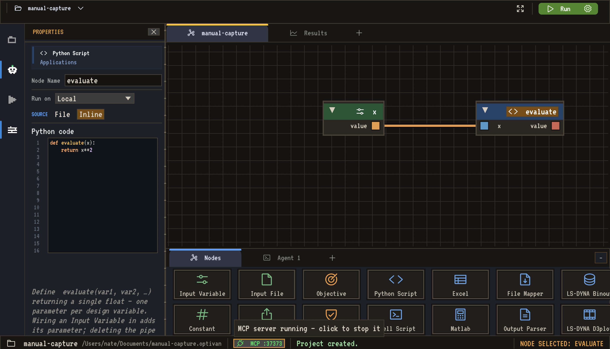
Drag from an output pin to a compatible input pin. A File output cannot land on a Scalar input — Optivan rejects the connection.The evaluation pipeline
When a study runs, Optivan compiles the graph into a pipeline and evaluates it once per design point:
- The optimizer proposes a design vector
x(one value per Input Variable). - Optivan creates an isolated working directory for that evaluation (
eval_000001/, …) so parallel evaluations never clash over files. - Nodes evaluate in dependency order: variables are set, evaluators run, files are generated and parsed, and the Objective / Constraint nodes record their values.
- The result of one evaluation is an Eval — its objective(s), its constraint margins, and whether it was feasible.
 One design point flows left-to-right through the graph; each evaluation runs in its own
temp directory.
One design point flows left-to-right through the graph; each evaluation runs in its own
temp directory.
Objectives, constraints, and feasibility
- An objective is a number to minimize or maximize. Multiple objectives turn the study into a multi-objective search and Optivan returns a Pareto front.
- A constraint is a number with a rule (
≤,≥,=, or a range). A design is feasible when every constraint is satisfied. The optimizer prefers feasible designs and penalizes violations.
These are declared by wiring a scalar into an Objective or Constraint node — covered in Objectives & Constraints.
Run configurations and compute targets
- A run configuration is the recipe for a study: its type (Optimization, DOE, Monte Carlo, …), the algorithm, iteration limits, sampling, and parallel workers. A project can hold several and you pick which one is active. See Running a Study.
- A compute target is where an evaluator runs — Local, SSH, SLURM, or LSF. See Compute Targets.
With these concepts in hand, you’re ready to build a graph.
Building a Workflow
This chapter assembles a complete, runnable graph: two design variables feeding a Python evaluator, with one objective and one constraint. The pattern here is the backbone of nearly every Optivan study.
The target topology:
Input Variable ─┐
├─▶ Python Script ─┬─▶ Objective
Input Variable ─┘ └─▶ Constraint
1. Add nodes from the palette
Open the Nodes palette in the bottom dock. Nodes are grouped — Variables, Goals, Applications, Support. Drag a node onto the canvas, or double-click it.
 The Nodes palette. Drag an Input Variable onto the canvas to begin.
The Nodes palette. Drag an Input Variable onto the canvas to begin.
Add two Input Variable nodes, one Python Script, one Objective, and one Constraint.
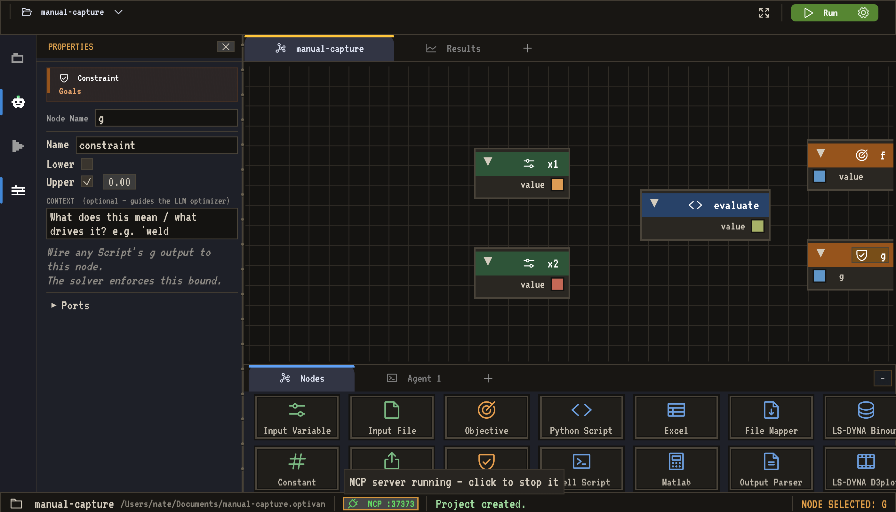
Two Input Variables, a Python Script, an Objective, and a Constraint — not yet wired.2. Configure the variables
Select an Input Variable to edit it in the Properties panel. Give it a name (this name is how your evaluator code refers to it) and set its bounds.
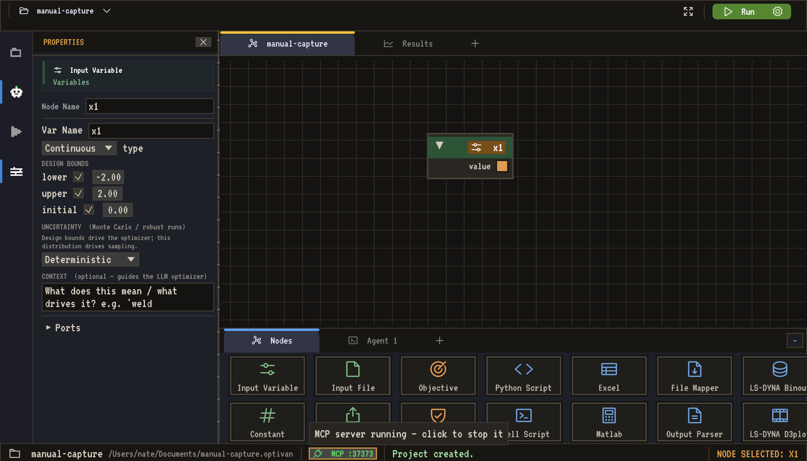
Name the variablex1, set its type to Continuous, and give it a lower and upper bound.
Variables come in four types:
| Type | Use for | Key settings |
|---|---|---|
| Continuous | real-valued parameters (thickness, angle) | lower & upper bound |
| Integer | whole-number parameters (count of ribs) | bounds; values are rounded |
| Discrete | values on a fixed grid (gauge steps) | bounds + step size |
| Categorical | unordered choices (material) | a list of categories |
For uncertainty studies you can also give a variable a distribution (Normal, Uniform,
LogNormal) — see Running a Study. Name the second variable x2.
3. Wire variables into the evaluator
An inline Python Script exposes a single fan-in input pin. Wire both variables into that one pin — Optivan passes each wired variable to your function by name. (This single fan-in pin is the correct pattern for inline Python and Matlab evaluators; do not look for a separate pin per variable.)
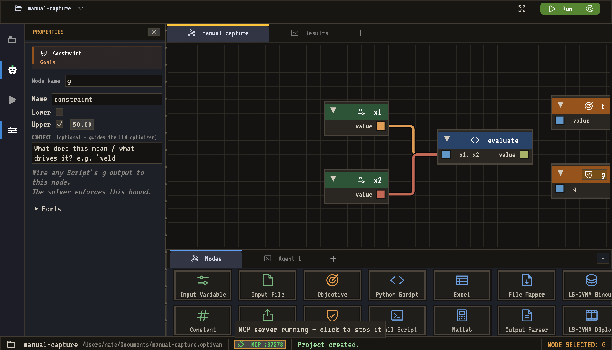
Drag a wire from each variable’svalue output into the Python Script’s input pin. Both
land on the same fan-in pin.
4. Write the evaluator
Select the Python Script. In inline mode, write a function whose parameters match your variable names. Return the objective value.
def evaluate(x1, x2):
# a simple bowl with a minimum away from the origin
return (x1 - 3.0)**2 + (x2 + 1.0)**2
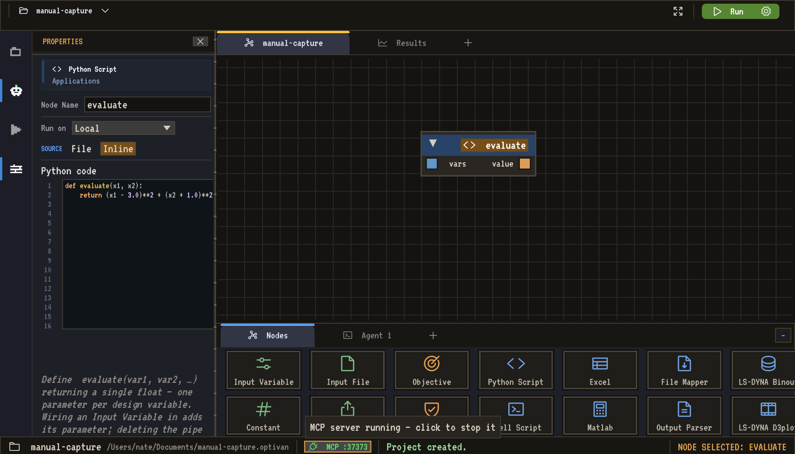
Inline mode: the function parameters (x1, x2) match the wired variable names. The return
value becomes the script’s Scalar output.
The other evaluator modes and node types (file-based Python, Shell, Matlab, File Mapper, Output Parser, LS-DYNA) are covered in Evaluators and LS-DYNA Integration.
5. Wire the objective and constraint
Wire the Python Script’s value output into the Objective node, and set its sense to
Minimize.
To add a constraint, you’ll usually compute the constrained quantity too. The simplest
approach is a second scalar output or a separate evaluator; here, wire the same value into
the Constraint node and set the rule (for example ≤ 50). A design is feasible when the
constraint holds.
The Python output feeds the Objective (Minimize) and the Constraint (≤ 50). Never wire a raw Input Variable straight into an Objective or Constraint — they expect an evaluated scalar.
6. Validate the graph
Before running, check the graph. Optivan flags common problems — a node with an unwired required input, an objective with no source, or a type mismatch.
 A valid graph: every required pin is wired and the study has at least one objective.
A valid graph: every required pin is wired and the study has at least one objective.
You now have a complete workflow. Continue to Objectives & Constraints for the goal nodes in depth, then Running a Study to execute it.
Evaluators
An evaluator runs your code or an external solver to turn a design point into numbers. Optivan ships several; they share the same idea — values come in on input pins, a result goes out on an output pin — and each runs in an isolated per-evaluation directory.
Python Script
The workhorse. Two modes:
- Inline — write a function directly in the node. It exposes a single fan-in input pin; wire all variables into it and name your function’s parameters after them (see Building a Workflow). The return value is the Scalar output.
- File — point the node at a
.pyfile. Pins map one-to-one to command-line arguments, which is convenient for code you already version-control.
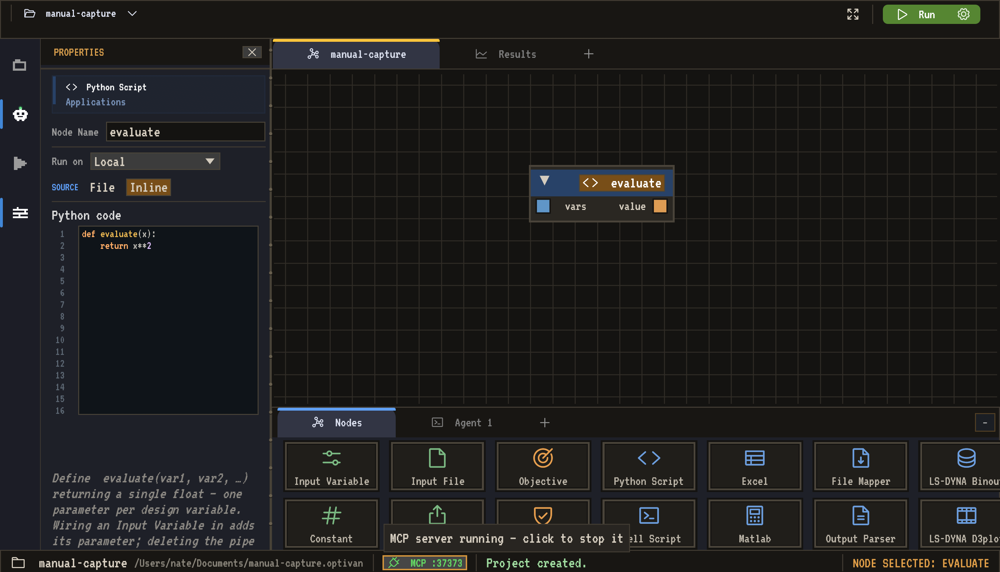
Switch between Inline and File mode in the Properties panel. Inline is fastest to start with.A Python evaluator can be assigned to a compute target to run on a remote machine or cluster.
Shell Script
Runs any command — a bash one-liner, a compiled binary, a solver. Inputs are passed as environment variables or stdin; outputs are read from stdout or a result file. Use this to wrap anything that isn’t Python or Matlab.
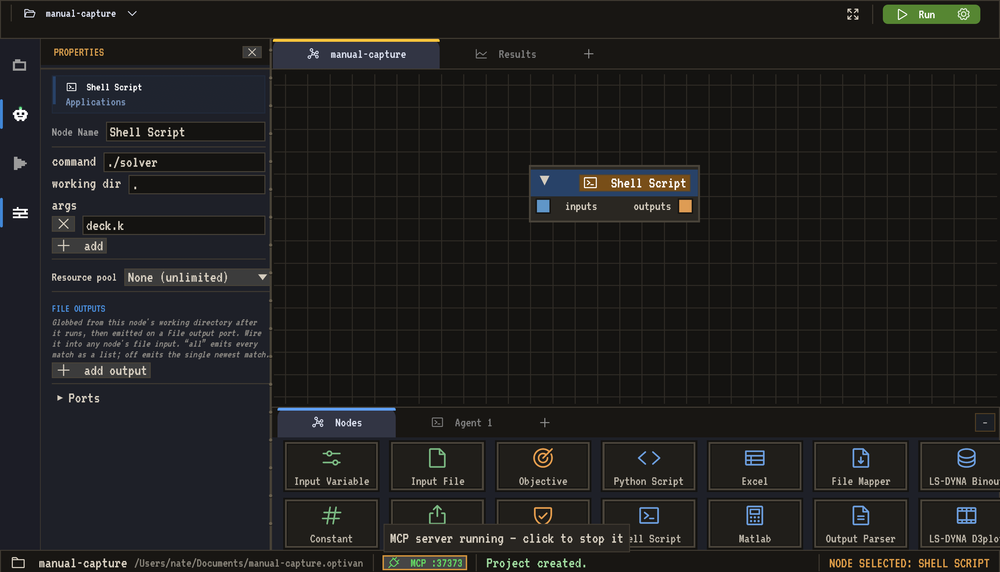
The Shell Script node runs a command in the evaluation’s working directory and reads a scalar result back.Matlab
Like the Python Script but calls Matlab or Octave, inline or from a file. Assign it to a compute target to pool Matlab licenses on a cluster.
File Mapper
Generates a solver input deck from a template by substituting design variables into placeholders.
- Wire variables into its fan-in pin.
- Point it at a template file with placeholders — choose a delimiter style (
{thickness},<thickness>,%thickness%, or[[thickness]]). - Map each placeholder to a variable, with an optional number format.
- Its output is a File pin (the generated deck) you wire into a solver.
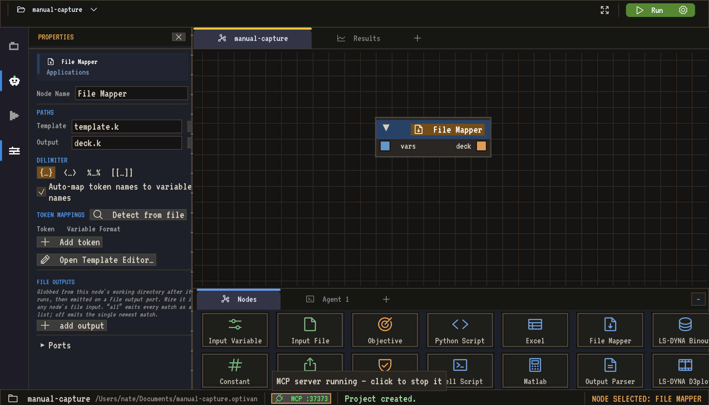
The File Mapper fills{thickness} in a template with the current design value and emits the
finished deck as a File output.
The classic chain is: Variables → File Mapper → Shell Script (run solver) → Output Parser → Objective.
Output Parser
Extracts a single number from a results file:
- Regex mode — capture group 1 of a pattern.
- CSV mode — a column reduced by
last,first,min,max,mean, orsum.
Its input is a File; its output is a Scalar you feed to a goal.
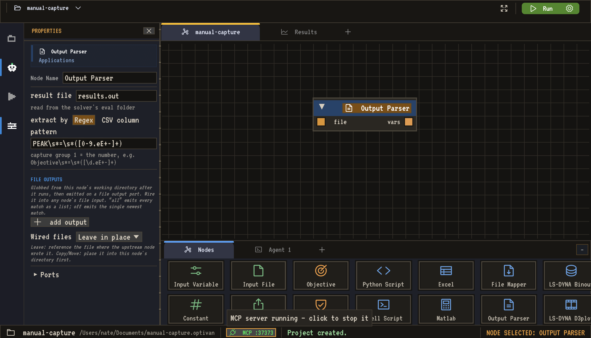
Regex or CSV extraction turns a solver’s text output into a scalar for an Objective or Constraint.For LS-DYNA, you usually skip the Output Parser and read binout / d3plot directly — see
LS-DYNA Integration.
Excel
Reads values from an Excel workbook, exposing cells as Scalar outputs — handy when a spreadsheet already encodes part of your model.
LS-DYNA Integration
Optivan reads LS-DYNA results directly, so you don’t have to post-process by hand. A typical crash / structural optimization wires up like this:
Variables ─▶ File Mapper (k-file) ─▶ Shell Script (run LS-DYNA) ─▶ LS-DYNA Binout ─▶ Objective
The File Mapper writes the keyword deck, the Shell Script launches the solver, and the Binout or D3plot node reads the binary results.
LS-DYNA Binout
Reads time-history channels from a binout file.
- Set the glob path that locates the binout for each evaluation (for example
eval_*/binout*). - Enumerate the available channels — Optivan walks the binout hierarchy and lists the
leaf paths (e.g.
nodout / d000042 / z_displacement). - Pick the channels you want and how to reduce them: a peak (Scalar output) or the full time-series (Vector output).
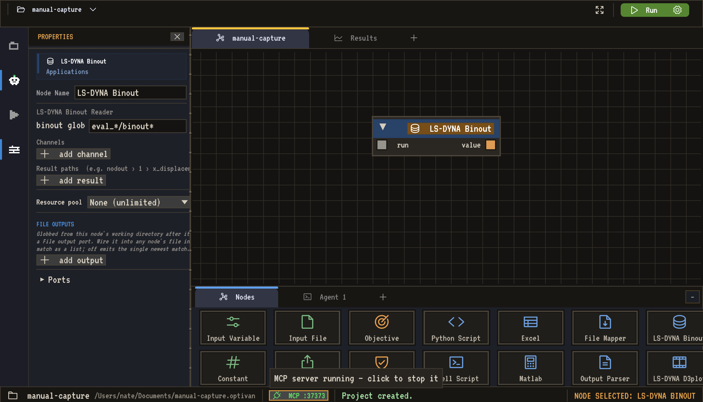
Enumerate the binout hierarchy, then choose channels and a peak-or-time-series reduction. Each chosen channel becomes an output pin.The Binout node takes a Trigger input — wire the solver’s “done” signal into it so it only reads results after the run completes. No separate Output Parser is needed.
LS-DYNA D3plot
Reads nodal displacement from the d3plot mesh-state files. Choose a metric — peak
displacement at the final state, peak across all states, or the displacement of a specific
node — and the node outputs that Scalar.
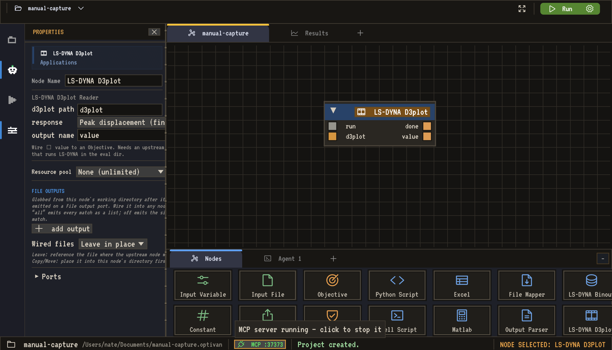
The D3plot node extracts a displacement metric from the mesh states and outputs it as a scalar for a goal.Tips
- Keep the File Mapper’s placeholders and your keyword deck in sync; a mistyped token leaves the default value in the deck.
- Use the glob path to match the per-evaluation working directory so parallel runs read their own results.
- Start with a tiny
max_iterand one worker to confirm the solver launches and the channel paths resolve before scaling up on a compute target.
Objectives & Constraints
Objectives and constraints are how you tell the optimizer what “good” means. They are sink nodes — they take a scalar in and produce no output.
Objectives
An Objective node takes one Scalar input (value) and a sense:
- Minimize — drive the value down (mass, cost, peak stress).
- Maximize — drive the value up (stiffness, energy absorbed).
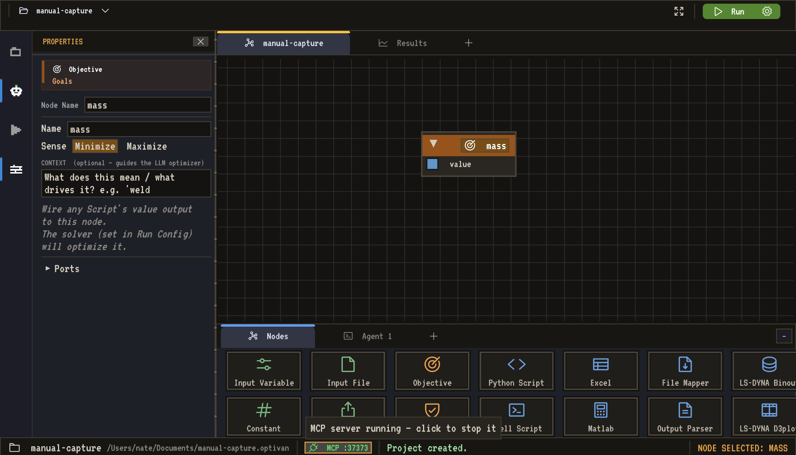
Wire your evaluator’s scalar output into the Objective’svalue pin and choose Minimize or
Maximize.
Multiple objectives → a Pareto front
Add more than one Objective node and the study becomes multi-objective. There is rarely a single best design; instead Optivan returns a Pareto front — the set of designs where you can’t improve one objective without worsening another. Use a multi-objective algorithm such as NSGA-II (see Running a Study).
 Mass vs. stiffness: each point is a non-dominated design on the Pareto front.
Mass vs. stiffness: each point is a non-dominated design on the Pareto front.
Constraints
A Constraint node takes a Scalar input (g) and enforces a rule:
| Kind | Feasible when | Set |
|---|---|---|
≤ | g ≤ upper | upper bound |
≥ | g ≥ lower | lower bound |
= | g = target (within tolerance) | target + tolerance |
| range | lower ≤ g ≤ upper | both bounds |
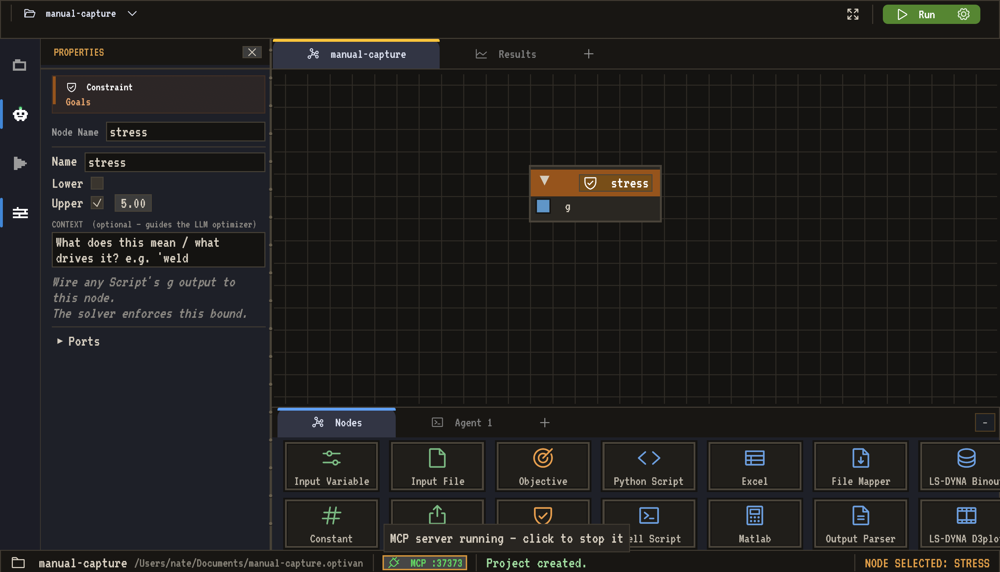
Wire the constrained quantity into theg pin and set the kind and bound. Here: g ≤ 5.
A design is feasible when every constraint holds. Internally Optivan tracks a signed margin per constraint — negative means satisfied, positive means violated — and the optimizer adds a penalty proportional to the violation, so it is steered toward feasibility. Equality constraints use the tolerance to decide how close is close enough.
Common mistake: wiring a raw Input Variable directly into an Objective or Constraint. These nodes expect an evaluated quantity (a Python result, a parsed solver output), not a design variable. If you just want to bound a variable, set its bounds on the variable node instead.
Composite nodes
A Composite node combines several scalars into one using an algebraic expression — useful for weighted sums, stress margins, or normalizing before an objective.
0.7*mass + 0.3*max_disp
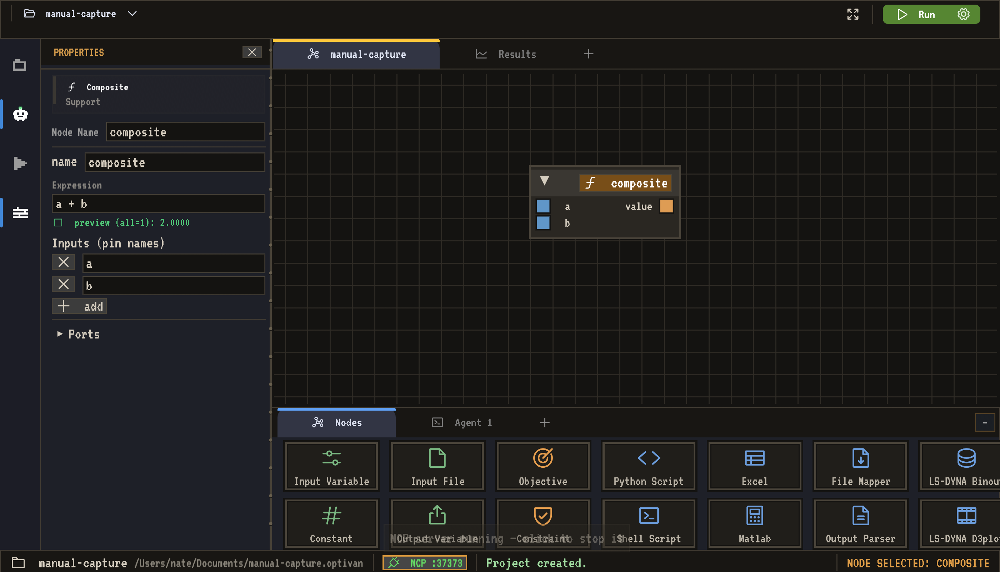
A Composite computes an expression over its wired inputs and outputs a single scalar — here a weighted sum that then feeds an Objective.With goals defined, you’re ready to configure and launch the study.
Running a Study
A run configuration is the recipe for a study — its type, algorithm, limits, and how many evaluations run in parallel. A project can hold several; you pick which one is active and press Run.
Choosing a run type
Open the run configuration editor from the gear next to the Run button.
 The run-config editor. Pick a run type, an algorithm, and limits, then save.
The run-config editor. Pick a run type, an algorithm, and limits, then save.
| Run type | What it does | Typical use |
|---|---|---|
| Optimization | search for the best design | minimize mass subject to constraints |
| DOE | sample the space on a plan | screening, building a surrogate dataset |
| MonteCarlo | random sampling from variable distributions | uncertainty quantification |
| RobustOptimization | optimize accounting for variation (RBDO) | designs that stay feasible under scatter |
| SobolSensitivity | variance-based sensitivity indices | which inputs matter most |
Algorithms and limits
The available algorithms depend on the run type. Common knobs:
- max_iter — the evaluation budget (the most important limit to set).
- tolerance — the convergence criterion.
- pop_size / n_starts — population size or multi-start count for population and multi-start algorithms.
- DOE method — Latin Hypercube, Sobol, Random, Full Factorial, or Central Composite — with a sample count.
- surrogate — for surrogate-assisted runs (SRSM): Kriging, RBF, RSM, or a neural net, plus the number of initial and refinement samples.
- robust parameters — sample count, β target, and seed for robust / reliability studies.
 Algorithm and limits for an Optimization run. Start with a modest
Algorithm and limits for an Optimization run. Start with a modest max_iter, confirm the
graph evaluates, then scale up.
Parallel workers
Set workers to evaluate several design points at once. Because each evaluation runs in its own temp directory, parallelism is safe. The right number depends on your machine and, for remote evaluators, on your compute target.
Running and watching progress
Press Run (or ⌘R). The status bar shows a live trace; the dashboard updates as evaluations complete. To stop early, press Run again (it becomes Stop).
 A live run: the status bar streams progress and the convergence chart fills in.
A live run: the status bar streams progress and the convergence chart fills in.
When the study finishes, Optivan offers to save the results, and they appear under Runs in the left sidebar. Continue to Results & Post-Processing to interpret them.
Compute Targets
A compute target is where an evaluator runs. By default everything runs Local, on your machine. To use a remote server or an HPC scheduler, define a target and assign evaluators to it.
 Define compute targets here, then assign Python / Matlab / Shell evaluators to them.
Define compute targets here, then assign Python / Matlab / Shell evaluators to them.
| Target | Runs on | Key settings |
|---|---|---|
| Local | this machine | none |
| SSH | a remote host | host, user, remote dir, key path |
| SLURM | a Slurm cluster | host, user, partition, nodes, cpus, memory, walltime |
| LSF | an IBM LSF cluster | host, user, queue, slots, memory, walltime |
Assigning an evaluator to a target
Select an evaluator (Python, Matlab, or Shell) and choose its compute target in the Properties panel. At run time that node’s work is dispatched to the target while the rest of the graph is orchestrated from your machine.
 Each evaluator can run on a different target — for example, heavy solves on SLURM while light
post-processing stays local.
Each evaluator can run on a different target — for example, heavy solves on SLURM while light
post-processing stays local.
Tips
- Combine targets with parallel workers (see Running a Study) to evaluate many design points at once on a cluster.
- Test connectivity with a small DOE before launching a long optimization.
- Remote evaluations still run in isolated per-evaluation directories, so parallel jobs don’t collide.
Results & Post-Processing
When a study finishes, its results appear under Runs in the left sidebar and open in the dashboard. Optivan gives you several linked views to understand the design space, not just the single best point.
 The dashboard after a run: convergence, the design table, and the chart palette.
The dashboard after a run: convergence, the design table, and the chart palette.
Convergence
For optimizations, the convergence chart shows the best objective value found so far against evaluation count — the quickest check that the search is making progress and has settled.
 Best-objective-so-far over evaluations. A flat tail means the search has converged.
Best-objective-so-far over evaluations. A flat tail means the search has converged.
Parallel Coordinates (PCP)
Every evaluation is one line crossing an axis per variable, plus objectives and constraints. Brush an axis to filter; colour the lines by objective rank or by feasibility. This is the best single view for spotting trade-offs and feasible regions.
 Parallel coordinates: drag on an axis to filter designs; recolour by feasibility to see where
constraints bite.
Parallel coordinates: drag on an axis to filter designs; recolour by feasibility to see where
constraints bite.
Scatter and correlation
- Scatter matrix — every input-vs-output pair as a grid of 2-D scatter plots.
- Correlation matrix — a Pearson-correlation heatmap showing which inputs move with which outputs.
 The correlation matrix highlights the strongest input-output relationships at a glance.
The correlation matrix highlights the strongest input-output relationships at a glance.
Response surface
Fit a Kriging surrogate over two chosen variables (holding the rest at their mean) and view it as a contour heatmap — a smooth picture of how the objective responds to those two inputs.
 A response surface over two variables, with the evaluated points overlaid.
A response surface over two variables, with the evaluated points overlaid.
Decision-tree importance
Fit a classification tree to the results and read off variable importance — which inputs explain the most variation in the objective. A fast way to decide what to keep exploring and what to fix.
 Decision-tree importance ranks inputs by how much they drive the objective.
Decision-tree importance ranks inputs by how much they drive the objective.
Tutorials
End-to-end walkthroughs that put the concepts together. Start with the first — it takes about ten minutes and uses nothing but Optivan.
Tutorial 1 — Minimize the Rosenbrock function
A classic optimization test problem, built from scratch.
Goal: minimize f(x1, x2) = (1 - x1)² + 100·(x2 - x1²)², which has its minimum at
(1, 1).
- New project. File → New Project.
- Add two Input Variables. Name them
x1andx2; set both to Continuous with bounds-2to2. - Add a Python Script (inline) and wire both variables into its input pin.
- Write the function:
def evaluate(x1, x2): return (1 - x1)**2 + 100*(x2 - x1**2)**2 - Add an Objective, wire the Python output into it, set Minimize.
- Configure the run: Optimization, a gradient-free algorithm,
max_iter≈ 200. - Run. Watch the convergence curve drop toward zero and the best design approach
(1, 1).
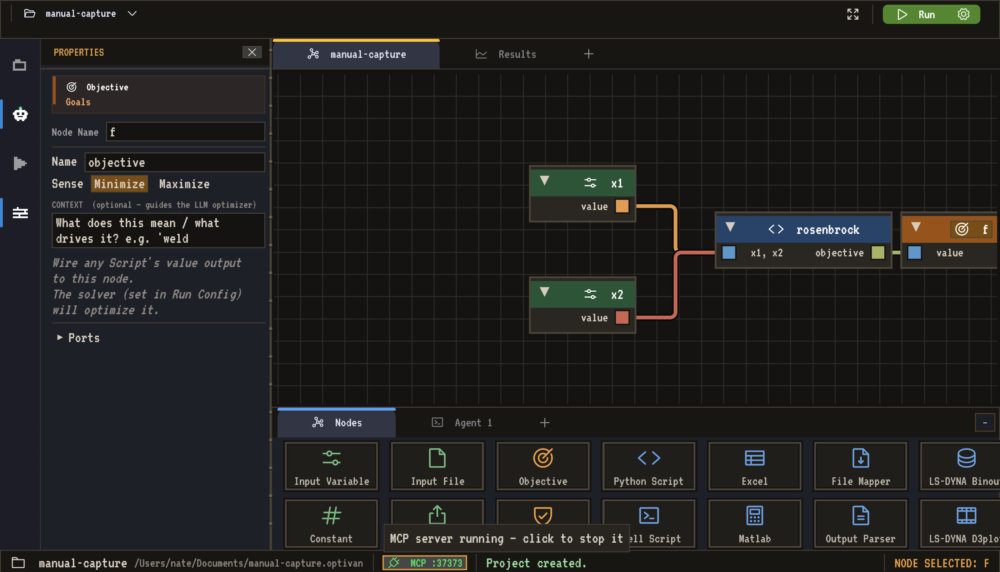
The completed Rosenbrock workflow and its convergence toward the known minimum at (1, 1).Tutorial 2 — A File-Mapper + external-solver loop
Wrap a solver you call from the shell.
- Variables → File Mapper to write an input deck from a template.
- File Mapper → Shell Script to run the solver on the generated deck.
- Shell Script → Output Parser (regex or CSV) to read the result.
- Output Parser → Objective (and a Constraint if needed).
- Run a small DOE first to confirm the loop works, then switch to Optimization.
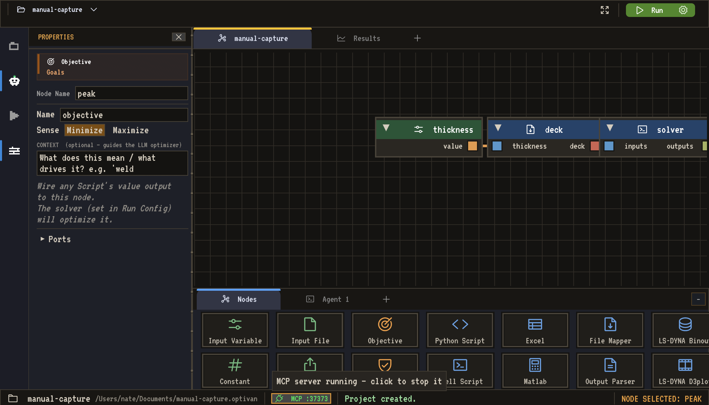
Variables → File Mapper → Shell Script → Output Parser → Objective: the general pattern for any external solver.Tutorial 3 — LS-DYNA crash optimization
Minimize peak displacement subject to a mass constraint.
- Variables (gauges) → File Mapper to write the keyword deck.
- File Mapper → Shell Script to run LS-DYNA.
- LS-DYNA Binout reads peak displacement (triggered by the solver finishing).
- Binout → Objective (Minimize displacement); a Composite or second channel feeds a mass Constraint.
- Assign the solve to a SLURM compute target and run with several workers.
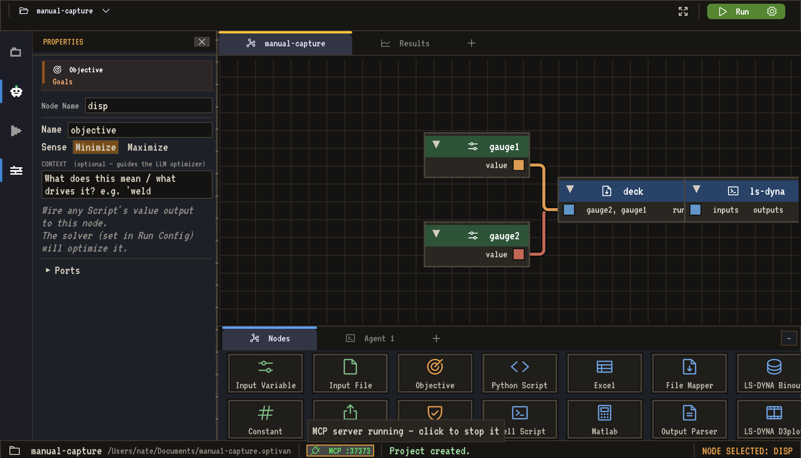
A crash study: gauges drive the deck, LS-DYNA runs on the cluster, and Binout feeds the goals.Troubleshooting & FAQ
Ask Optivan (in-app help)
The fastest way to an answer is the Ask Optivan button in the top bar. It opens a chat panel, knows this entire manual, and — if you tick Share project context — can look at your current graph and last run to give specific advice. It only reads your project to help; it never changes it. Project context is off by default and only sent when you opt in.
 Ask Optivan answers from the manual, and with “Share project context” ticked it can explain
what’s wrong with your specific graph.
Ask Optivan answers from the manual, and with “Share project context” ticked it can explain
what’s wrong with your specific graph.
Common wiring errors
“I wired a variable straight into my Objective and the run does nothing useful.” Objective and Constraint nodes expect an evaluated scalar — a Python result or a parsed solver output — not a raw design variable. Insert an evaluator between them.
“My inline Python can’t see my variables.” Inline Python and Matlab use a single fan-in input pin. Wire every variable into that one pin and name your function’s parameters after the variables. Don’t look for one pin per variable.
“Optivan won’t let me connect two pins.” Pins are typed. A File output can’t connect to a Scalar input, and so on. Check that the pin types match (see Core Concepts).
Run problems
“The run fails immediately.” Run Validate on the graph first — it flags unwired required inputs, missing objectives, and type mismatches. Then run a 1-evaluation DOE with a single worker to isolate the failing node.
“My solver / Output Parser returns nothing.”
Confirm the glob path matches the per-evaluation working directory (eval_*/…), and that the
regex/CSV column actually appears in the solver’s output for that evaluation.
“The optimization isn’t converging.”
Check the convergence curve. Common causes: too small an evaluation budget (max_iter),
constraints that are infeasible everywhere (loosen a bound to confirm), or an objective that
isn’t actually responding to the variables (verify with a DOE + correlation matrix). Ask
Optivan with project context on for a graph-specific diagnosis.
Account & licensing
“I’m asked to sign in again.” Your session is cached after sign-in. If it expired, sign in again with your email and password. New users set a password after entering the emailed code.
“How do I get the latest version?” Download from obt.tools with the same email you signed up with.
Automation (MCP)
Optivan exposes its operations over the Model Context Protocol (MCP), so an AI agent or a script can build graphs, run studies, and read results programmatically — the same actions you take in the UI, available to automation.
Enabling the MCP server
Start Optivan with the MCP server enabled (environment variable OPTIVAN_MCP=1). It listens
on localhost and speaks MCP over HTTP/SSE, so MCP-aware clients (for example Claude Code or
the in-app agent dock) can connect.
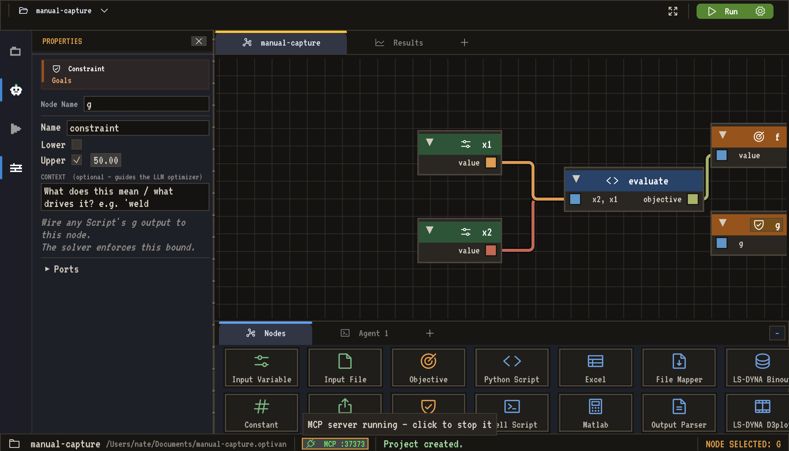
With the MCP server enabled, an agent can add nodes, wire pins, run studies, and read results — driving the same canvas you see.What’s exposed
The toolset mirrors the app:
- Graph —
new_project,add_node,connect_pins,disconnect_pins,list_nodes,set_node_config,validate_graph. - Run —
set_run_config,set_compute_target,run,get_run_status,stop_run. - LS-DYNA —
enumerate_binout_paths,list_binout_variables,list_d3plot_fields. - Results —
get_results_data,show_plot,generate_plot,fit_response_surface,get_correlation_matrix,fit_decision_tree. - Utility —
screenshot,set_file_mapper,preview_template.
Uses
- Reproducible studies — script a graph and run it the same way every time.
- Batch exploration — sweep configurations from code.
- Documentation — the screenshots in this manual are captured by driving Optivan through MCP, so they stay in sync with the UI.
This is an advanced feature; most users never need it. The in-app Ask Optivan assistant uses a read-only view of your project (it never calls these mutating tools) — see Troubleshooting.